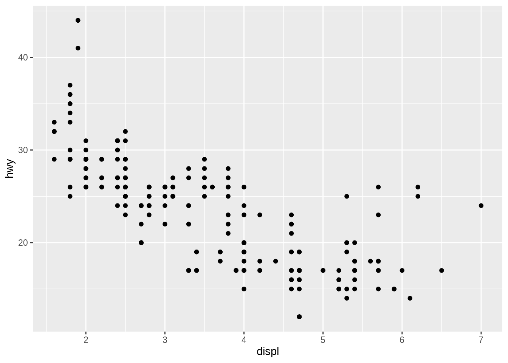

Choose “File → New File → R Markdown…”. In the dialog, choose a document title and adapt the author name if necessary.
Choose “File → Knit document”, or press Ctrl + Shift + K, or hit the “Knit” button at the top of the text pane.
Run all chunks in the document via Ctrl + Alt + R or “Code → Run region → Run All” or via the “Run” popup at the top of the text pane.
Run a single chunk by moving the caret in the text pane into the chunk and pressing Ctrl + Shift + Enter.
Navigate chunks and headers by choosing from the popup at the bottom or from the document outline (you may need to hit the “Show document outline” button at the top right, or press Ctrl + Shift + O).
Clear the entire document except the “YAML header” (the first few lines that start and end with ---) and the setup chunk.
In this chunk, load the tidyverse package. Knit the resulting document. Does the result surprise you?
Insert a chunk via “Code → Insert chunk”, Ctrl + Alt + I, or the “Insert” popup at the top of the text pane.
In this new chunk, show the mpg dataset.
In another new chunk, show a simple plot of the mpg dataset.
Add a descriptive text, use Markdown formatting (headers, emphasis, links, …) and perhaps try an equation in LaTeX notation.
In this descriptive text, add a value computed from the data, e.g. nrow(mtcars), as inline code.
► Solution:
---
title: "Test document"
author: "Kirill Müller, cynkra GmbH"
output: html_document
---
```{r setup, include=FALSE}
knitr::opts_chunk$set(echo = FALSE)
library(tidyverse)
```
# Introduction
We will be reviewing a dataset of `r nrow(mpg)` cars. The dataset is listed below.
```{r}
mpg
```
## Relationship between engine displacement and highway mileage
The plot below should *not* surprise us: The larger the engine, the more energy it consumes per distance driven (in $\frac{\text{J}}{\text{km}}$), the less is the mileage per unit of gasoline (in $\frac{\text{miles}}{\text{gallon}}$).
```{r}
ggplot(mpg, aes(displ, hwy)) +
geom_point()
```
Possible reasons why people would choose a larger engine include:
- ...
- ...
- ...We will be reviewing a dataset of 234 cars. The dataset is listed below.
mpg## # A tibble: 234 x 11
## manufacturer model displ year cyl trans drv cty hwy fl class
## <chr> <chr> <dbl> <int> <int> <chr> <chr> <int> <int> <chr> <chr>
## 1 audi a4 1.8 1999 4 auto(l… f 18 29 p comp…
## 2 audi a4 1.8 1999 4 manual… f 21 29 p comp…
## 3 audi a4 2 2008 4 manual… f 20 31 p comp…
## 4 audi a4 2 2008 4 auto(a… f 21 30 p comp…
## 5 audi a4 2.8 1999 6 auto(l… f 16 26 p comp…
## 6 audi a4 2.8 1999 6 manual… f 18 26 p comp…
## 7 audi a4 3.1 2008 6 auto(a… f 18 27 p comp…
## 8 audi a4 quat… 1.8 1999 4 manual… 4 18 26 p comp…
## 9 audi a4 quat… 1.8 1999 4 auto(l… 4 16 25 p comp…
## 10 audi a4 quat… 2 2008 4 manual… 4 20 28 p comp…
## # … with 224 more rowsThe plot below should not surprise us: The larger the engine, the more energy it consumes per distance driven (in \(\frac{\text{J}}{\text{km}}\)), the less is the mileage per unit of gasoline (in \(\frac{\text{miles}}{\text{gallon}}\)).
ggplot(mpg, aes(displ, hwy)) +
geom_point()
Possible reasons why people would choose a larger engine include:
Copyright © 2019 Kirill Müller. Licensed under CC BY-NC 4.0.